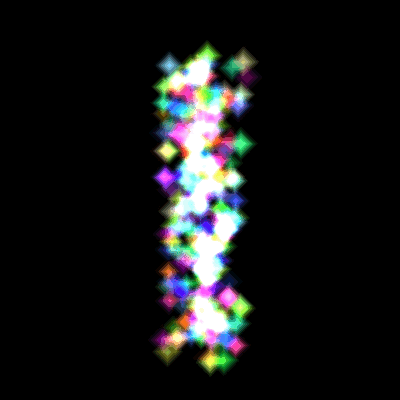

This tutorial will cover how to create particle systems in DirectX 11 using HLSL and C++.
Particles are usually made by using a single texture placed on a quad.
And then that quad is rendered hundreds of times each frame using some basic physics to mimic things such as snow, rain, smoke, fire, foliage, and numerous other systems that are generally made up of many small but similar elements.
In this particle tutorial we will use a single diamond texture and render it hundreds of times each frame to create a colorful diamond waterfall style effect.
Additionally, we will also use blending to blend the particles together so that layered particles cumulatively add their color to each other.
Make sure to also read the summary after going over the tutorial as that is where I explain how to expand this basic particle system into a more advanced, robust, and efficient implementation.
Framework
The framework for this tutorial has the basics as usual.
It also uses the TimerClass for timing when to emit new particles.
The new class used for shading the particles is called ParticleShaderClass.
And finally, the new particle system itself is encapsulated in the ParticleSystemClass.

We will start the code section by looking at the particle shader first.
Particle.vs
The particle.vs and particle.ps HLSL shader programs are what we use to render the particles.
They are the basic texture shader with an added color modifying component.
////////////////////////////////////////////////////////////////////////////////
// Filename: particle.vs
////////////////////////////////////////////////////////////////////////////////
/////////////
// GLOBALS //
/////////////
cbuffer MatrixBuffer
{
matrix worldMatrix;
matrix viewMatrix;
matrix projectionMatrix;
};
//////////////
// TYPEDEFS //
//////////////
The two input types both have a color component so that the particle can have an individual color that is added to the texture base color.
struct VertexInputType
{
float4 position : POSITION;
float2 tex : TEXCOORD0;
float4 color : COLOR;
};
struct PixelInputType
{
float4 position : SV_POSITION;
float2 tex : TEXCOORD0;
float4 color : COLOR;
};
////////////////////////////////////////////////////////////////////////////////
// Vertex Shader
////////////////////////////////////////////////////////////////////////////////
PixelInputType ParticleVertexShader(VertexInputType input)
{
PixelInputType output;
// Change the position vector to be 4 units for proper matrix calculations.
input.position.w = 1.0f;
// Calculate the position of the vertex against the world, view, and projection matrices.
output.position = mul(input.position, worldMatrix);
output.position = mul(output.position, viewMatrix);
output.position = mul(output.position, projectionMatrix);
// Store the texture coordinates for the pixel shader.
output.tex = input.tex;
The color is sent through to the pixel shader here.
// Store the particle color for the pixel shader.
output.color = input.color;
return output;
}
Particle.ps
////////////////////////////////////////////////////////////////////////////////
// Filename: particle.ps
////////////////////////////////////////////////////////////////////////////////
/////////////
// GLOBALS //
/////////////
Texture2D shaderTexture : register(t0);
SamplerState SampleType : register(s0);
//////////////
// TYPEDEFS //
//////////////
The PixelInputType has the added color component in the pixel shader also.
struct PixelInputType
{
float4 position : SV_POSITION;
float2 tex : TEXCOORD0;
float4 color : COLOR;
};
////////////////////////////////////////////////////////////////////////////////
// Pixel Shader
////////////////////////////////////////////////////////////////////////////////
float4 ParticlePixelShader(PixelInputType input) : SV_TARGET
{
float4 textureColor;
float4 finalColor;
// Sample the pixel color from the texture using the sampler at this texture coordinate location.
textureColor = shaderTexture.Sample(SampleType, input.tex);
Here is where we combine the texture color and the input particle color to get the final output color.
// Combine the texture color and the particle color to get the final color result.
finalColor = textureColor * input.color;
return finalColor;
}
Particleshaderclass.h
The ParticleShaderClass is just the TextureShaderClass modified to handle a color component for the particles.
////////////////////////////////////////////////////////////////////////////////
// Filename: particleshaderclass.h
////////////////////////////////////////////////////////////////////////////////
#ifndef _PARTICLESHADERCLASS_H_
#define _PARTICLESHADERCLASS_H_
//////////////
// INCLUDES //
//////////////
#include <d3d11.h>
#include <d3dcompiler.h>
#include <directxmath.h>
#include <fstream>
using namespace DirectX;
using namespace std;
////////////////////////////////////////////////////////////////////////////////
// Class name: ParticleShaderClass
////////////////////////////////////////////////////////////////////////////////
class ParticleShaderClass
{
private:
struct MatrixBufferType
{
XMMATRIX world;
XMMATRIX view;
XMMATRIX projection;
};
public:
ParticleShaderClass();
ParticleShaderClass(const ParticleShaderClass&);
~ParticleShaderClass();
bool Initialize(ID3D11Device*, HWND);
void Shutdown();
bool Render(ID3D11DeviceContext*, int, XMMATRIX, XMMATRIX, XMMATRIX, ID3D11ShaderResourceView*);
private:
bool InitializeShader(ID3D11Device*, HWND, WCHAR*, WCHAR*);
void ShutdownShader();
void OutputShaderErrorMessage(ID3D10Blob*, HWND, WCHAR*);
bool SetShaderParameters(ID3D11DeviceContext*, XMMATRIX, XMMATRIX, XMMATRIX, ID3D11ShaderResourceView*);
void RenderShader(ID3D11DeviceContext*, int);
private:
ID3D11VertexShader* m_vertexShader;
ID3D11PixelShader* m_pixelShader;
ID3D11InputLayout* m_layout;
ID3D11Buffer* m_matrixBuffer;
ID3D11SamplerState* m_sampleState;
};
#endif
Particleshaderclass.cpp
////////////////////////////////////////////////////////////////////////////////
// Filename: particleshaderclass.cpp
////////////////////////////////////////////////////////////////////////////////
#include "particleshaderclass.h"
ParticleShaderClass::ParticleShaderClass()
{
m_vertexShader = 0;
m_pixelShader = 0;
m_layout = 0;
m_matrixBuffer = 0;
m_sampleState = 0;
}
ParticleShaderClass::ParticleShaderClass(const ParticleShaderClass& other)
{
}
ParticleShaderClass::~ParticleShaderClass()
{
}
bool ParticleShaderClass::Initialize(ID3D11Device* device, HWND hwnd)
{
wchar_t vsFilename[128], psFilename[128];
int error;
bool result;
We load the particle.vs and particle.ps HLSL shader files here.
// Set the filename of the vertex shader.
error = wcscpy_s(vsFilename, 128, L"../Engine/particle.vs");
if(error != 0)
{
return false;
}
// Set the filename of the pixel shader.
error = wcscpy_s(psFilename, 128, L"../Engine/particle.ps");
if(error != 0)
{
return false;
}
// Initialize the vertex and pixel shaders.
result = InitializeShader(device, hwnd, vsFilename, psFilename);
if(!result)
{
return false;
}
return true;
}
void ParticleShaderClass::Shutdown()
{
// Shutdown the vertex and pixel shaders as well as the related objects.
ShutdownShader();
return;
}
bool ParticleShaderClass::Render(ID3D11DeviceContext* deviceContext, int indexCount, XMMATRIX worldMatrix, XMMATRIX viewMatrix, XMMATRIX projectionMatrix, ID3D11ShaderResourceView* texture)
{
bool result;
// Set the shader parameters that it will use for rendering.
result = SetShaderParameters(deviceContext, worldMatrix, viewMatrix, projectionMatrix, texture);
if(!result)
{
return false;
}
// Now render the prepared buffers with the shader.
RenderShader(deviceContext, indexCount);
return true;
}
bool ParticleShaderClass::InitializeShader(ID3D11Device* device, HWND hwnd, WCHAR* vsFilename, WCHAR* psFilename)
{
HRESULT result;
ID3D10Blob* errorMessage;
ID3D10Blob* vertexShaderBuffer;
ID3D10Blob* pixelShaderBuffer;
The layout will require a third element.
D3D11_INPUT_ELEMENT_DESC polygonLayout[3];
unsigned int numElements;
D3D11_BUFFER_DESC matrixBufferDesc;
D3D11_SAMPLER_DESC samplerDesc;
// Initialize the pointers this function will use to null.
errorMessage = 0;
vertexShaderBuffer = 0;
pixelShaderBuffer = 0;
Load the particle vertex shader here.
// Compile the vertex shader code.
result = D3DCompileFromFile(vsFilename, NULL, NULL, "ParticleVertexShader", "vs_5_0", D3D10_SHADER_ENABLE_STRICTNESS, 0,
&vertexShaderBuffer, &errorMessage);
if(FAILED(result))
{
// If the shader failed to compile it should have writen something to the error message.
if(errorMessage)
{
OutputShaderErrorMessage(errorMessage, hwnd, vsFilename);
}
// If there was nothing in the error message then it simply could not find the shader file itself.
else
{
MessageBox(hwnd, vsFilename, L"Missing Shader File", MB_OK);
}
return false;
}
Load the particle pixel shader here.
// Compile the pixel shader code.
result = D3DCompileFromFile(psFilename, NULL, NULL, "ParticlePixelShader", "ps_5_0", D3D10_SHADER_ENABLE_STRICTNESS, 0,
&pixelShaderBuffer, &errorMessage);
if(FAILED(result))
{
// If the shader failed to compile it should have writen something to the error message.
if(errorMessage)
{
OutputShaderErrorMessage(errorMessage, hwnd, psFilename);
}
// If there was nothing in the error message then it simply could not find the file itself.
else
{
MessageBox(hwnd, psFilename, L"Missing Shader File", MB_OK);
}
return false;
}
// Create the vertex shader from the buffer.
result = device->CreateVertexShader(vertexShaderBuffer->GetBufferPointer(), vertexShaderBuffer->GetBufferSize(), NULL, &m_vertexShader);
if(FAILED(result))
{
return false;
}
// Create the pixel shader from the buffer.
result = device->CreatePixelShader(pixelShaderBuffer->GetBufferPointer(), pixelShaderBuffer->GetBufferSize(), NULL, &m_pixelShader);
if(FAILED(result))
{
return false;
}
// Create the vertex input layout description.
polygonLayout[0].SemanticName = "POSITION";
polygonLayout[0].SemanticIndex = 0;
polygonLayout[0].Format = DXGI_FORMAT_R32G32B32_FLOAT;
polygonLayout[0].InputSlot = 0;
polygonLayout[0].AlignedByteOffset = 0;
polygonLayout[0].InputSlotClass = D3D11_INPUT_PER_VERTEX_DATA;
polygonLayout[0].InstanceDataStepRate = 0;
polygonLayout[1].SemanticName = "TEXCOORD";
polygonLayout[1].SemanticIndex = 0;
polygonLayout[1].Format = DXGI_FORMAT_R32G32_FLOAT;
polygonLayout[1].InputSlot = 0;
polygonLayout[1].AlignedByteOffset = D3D11_APPEND_ALIGNED_ELEMENT;
polygonLayout[1].InputSlotClass = D3D11_INPUT_PER_VERTEX_DATA;
polygonLayout[1].InstanceDataStepRate = 0;
Add a third component to the layout for the particle shader.
The third component is the individual color of each particle.
polygonLayout[2].SemanticName = "COLOR";
polygonLayout[2].SemanticIndex = 0;
polygonLayout[2].Format = DXGI_FORMAT_R32G32B32A32_FLOAT;
polygonLayout[2].InputSlot = 0;
polygonLayout[2].AlignedByteOffset = D3D11_APPEND_ALIGNED_ELEMENT;
polygonLayout[2].InputSlotClass = D3D11_INPUT_PER_VERTEX_DATA;
polygonLayout[2].InstanceDataStepRate = 0;
// Get a count of the elements in the layout.
numElements = sizeof(polygonLayout) / sizeof(polygonLayout[0]);
// Create the vertex input layout.
result = device->CreateInputLayout(polygonLayout, numElements, vertexShaderBuffer->GetBufferPointer(),
vertexShaderBuffer->GetBufferSize(), &m_layout);
if(FAILED(result))
{
return false;
}
// Release the vertex shader buffer and pixel shader buffer since they are no longer needed.
vertexShaderBuffer->Release();
vertexShaderBuffer = 0;
pixelShaderBuffer->Release();
pixelShaderBuffer = 0;
// Setup the description of the dynamic matrix constant buffer that is in the vertex shader.
matrixBufferDesc.Usage = D3D11_USAGE_DYNAMIC;
matrixBufferDesc.ByteWidth = sizeof(MatrixBufferType);
matrixBufferDesc.BindFlags = D3D11_BIND_CONSTANT_BUFFER;
matrixBufferDesc.CPUAccessFlags = D3D11_CPU_ACCESS_WRITE;
matrixBufferDesc.MiscFlags = 0;
matrixBufferDesc.StructureByteStride = 0;
// Create the constant buffer pointer so we can access the vertex shader constant buffer from within this class.
result = device->CreateBuffer(&matrixBufferDesc, NULL, &m_matrixBuffer);
if(FAILED(result))
{
return false;
}
// Create a texture sampler state description.
samplerDesc.Filter = D3D11_FILTER_MIN_MAG_MIP_LINEAR;
samplerDesc.AddressU = D3D11_TEXTURE_ADDRESS_WRAP;
samplerDesc.AddressV = D3D11_TEXTURE_ADDRESS_WRAP;
samplerDesc.AddressW = D3D11_TEXTURE_ADDRESS_WRAP;
samplerDesc.MipLODBias = 0.0f;
samplerDesc.MaxAnisotropy = 1;
samplerDesc.ComparisonFunc = D3D11_COMPARISON_ALWAYS;
samplerDesc.BorderColor[0] = 0;
samplerDesc.BorderColor[1] = 0;
samplerDesc.BorderColor[2] = 0;
samplerDesc.BorderColor[3] = 0;
samplerDesc.MinLOD = 0;
samplerDesc.MaxLOD = D3D11_FLOAT32_MAX;
// Create the texture sampler state.
result = device->CreateSamplerState(&samplerDesc, &m_sampleState);
if(FAILED(result))
{
return false;
}
return true;
}
void ParticleShaderClass::ShutdownShader()
{
// Release the sampler state.
if(m_sampleState)
{
m_sampleState->Release();
m_sampleState = 0;
}
// Release the matrix constant buffer.
if(m_matrixBuffer)
{
m_matrixBuffer->Release();
m_matrixBuffer = 0;
}
// Release the layout.
if(m_layout)
{
m_layout->Release();
m_layout = 0;
}
// Release the pixel shader.
if(m_pixelShader)
{
m_pixelShader->Release();
m_pixelShader = 0;
}
// Release the vertex shader.
if(m_vertexShader)
{
m_vertexShader->Release();
m_vertexShader = 0;
}
return;
}
void ParticleShaderClass::OutputShaderErrorMessage(ID3D10Blob* errorMessage, HWND hwnd, WCHAR* shaderFilename)
{
char* compileErrors;
unsigned long long bufferSize, i;
ofstream fout;
// Get a pointer to the error message text buffer.
compileErrors = (char*)(errorMessage->GetBufferPointer());
// Get the length of the message.
bufferSize = errorMessage->GetBufferSize();
// Open a file to write the error message to.
fout.open("shader-error.txt");
// Write out the error message.
for(i=0; i<bufferSize; i++)
{
fout << compileErrors[i];
}
// Close the file.
fout.close();
// Release the error message.
errorMessage->Release();
errorMessage = 0;
// Pop a message up on the screen to notify the user to check the text file for compile errors.
MessageBox(hwnd, L"Error compiling shader. Check shader-error.txt for message.", shaderFilename, MB_OK);
return;
}
The SetShaderParameters function is the same as the texture shader class since we only set the three matrices and the texture.
bool ParticleShaderClass::SetShaderParameters(ID3D11DeviceContext* deviceContext, XMMATRIX worldMatrix, XMMATRIX viewMatrix,
XMMATRIX projectionMatrix, ID3D11ShaderResourceView* texture)
{
HRESULT result;
D3D11_MAPPED_SUBRESOURCE mappedResource;
MatrixBufferType* dataPtr;
unsigned int bufferNumber;
// Transpose the matrices to prepare them for the shader.
worldMatrix = XMMatrixTranspose(worldMatrix);
viewMatrix = XMMatrixTranspose(viewMatrix);
projectionMatrix = XMMatrixTranspose(projectionMatrix);
// Lock the constant buffer so it can be written to.
result = deviceContext->Map(m_matrixBuffer, 0, D3D11_MAP_WRITE_DISCARD, 0, &mappedResource);
if(FAILED(result))
{
return false;
}
// Get a pointer to the data in the constant buffer.
dataPtr = (MatrixBufferType*)mappedResource.pData;
// Copy the matrices into the constant buffer.
dataPtr->world = worldMatrix;
dataPtr->view = viewMatrix;
dataPtr->projection = projectionMatrix;
// Unlock the constant buffer.
deviceContext->Unmap(m_matrixBuffer, 0);
// Set the position of the constant buffer in the vertex shader.
bufferNumber = 0;
// Finally set the constant buffer in the vertex shader with the updated values.
deviceContext->VSSetConstantBuffers(bufferNumber, 1, &m_matrixBuffer);
// Set shader texture resource in the pixel shader.
deviceContext->PSSetShaderResources(0, 1, &texture);
return true;
}
void ParticleShaderClass::RenderShader(ID3D11DeviceContext* deviceContext, int indexCount)
{
// Set the vertex input layout.
deviceContext->IASetInputLayout(m_layout);
// Set the vertex and pixel shaders that will be used to render this triangle.
deviceContext->VSSetShader(m_vertexShader, NULL, 0);
deviceContext->PSSetShader(m_pixelShader, NULL, 0);
// Set the sampler state in the pixel shader.
deviceContext->PSSetSamplers(0, 1, &m_sampleState);
// Render the triangle.
deviceContext->DrawIndexed(indexCount, 0, 0);
return;
}
Particlesystemclass.h
////////////////////////////////////////////////////////////////////////////////
// Filename: particlesystemclass.h
////////////////////////////////////////////////////////////////////////////////
#ifndef _PARTICLESYSTEMCLASS_H_
#define _PARTICLESYSTEMCLASS_H_
//////////////
// INCLUDES //
//////////////
#include <d3d11.h>
#include <directxmath.h>
using namespace DirectX;
///////////////////////
// MY CLASS INCLUDES //
///////////////////////
#include "textureclass.h"
////////////////////////////////////////////////////////////////////////////////
// Class name: ParticleSystemClass
////////////////////////////////////////////////////////////////////////////////
class ParticleSystemClass
{
private:
The VertexType for rendering particles just requires position, texture coordinates, and color to match up with the ParticleType properties.
struct VertexType
{
XMFLOAT3 position;
XMFLOAT2 texture;
XMFLOAT4 color;
};
Particles can have any number of properties that define them.
In this implementation we put all the properties of a particle in the ParticleType structure.
You can add many more but for this tutorial I am just going to cover position, speed, and color.
struct ParticleType
{
float positionX, positionY, positionZ;
float red, green, blue;
float velocity;
bool active;
};
public:
ParticleSystemClass();
ParticleSystemClass(const ParticleSystemClass&);
~ParticleSystemClass();
The class functions are the regular initialize, shutdown, frame, and render.
However, note that the Frame function is where we do all the work of updating, sorting, and rebuilding the of vertex buffer each frame so the particles can be rendered correctly.
bool Initialize(ID3D11Device*, ID3D11DeviceContext*, char*);
void Shutdown();
bool Frame(float, ID3D11DeviceContext*);
void Render(ID3D11DeviceContext*);
ID3D11ShaderResourceView* GetTexture();
int GetIndexCount();
private:
bool LoadTexture(ID3D11Device*, ID3D11DeviceContext*, char*);
void ReleaseTexture();
bool InitializeParticleSystem();
void ShutdownParticleSystem();
bool InitializeBuffers(ID3D11Device*);
void ShutdownBuffers();
void RenderBuffers(ID3D11DeviceContext*);
void EmitParticles(float);
void UpdateParticles(float);
void KillParticles();
bool UpdateBuffers(ID3D11DeviceContext*);
private:
We use a single texture for all the particles in this tutorial.
TextureClass* m_Texture;
The particle system is an array of particles made up from the ParticleType structure.
ParticleType* m_particleList;
The next variables are for setting up a single vertex and index buffer.
Note that the vertex buffer will be dynamic since it will change all particle positions each frame.
VertexType* m_vertices;
ID3D11Buffer* m_vertexBuffer, * m_indexBuffer;
int m_vertexCount, m_indexCount;
The following private class variables are the ones used for the particle properties.
They define how the particle system will work and changing each of them has a unique effect on how the particle system will react.
If you plan to add more functionality to the particle system you would add it here by using additional variables for modifying the particles.
float m_particleDeviationX, m_particleDeviationY, m_particleDeviationZ;
float m_particleVelocity, m_particleVelocityVariation;
float m_particleSize, m_particlesPerSecond;
int m_maxParticles;
We require a count and an accumulated time variable for timing the emission of particles.
int m_currentParticleCount;
float m_accumulatedTime;
};
#endif
Particlesystemclass.cpp
////////////////////////////////////////////////////////////////////////////////
// Filename: particlesystemclass.cpp
////////////////////////////////////////////////////////////////////////////////
#include "particlesystemclass.h"
The class constructor initializes the private member variables to null.
ParticleSystemClass::ParticleSystemClass()
{
m_Texture = 0;
m_particleList = 0;
m_vertices = 0;
m_vertexBuffer = 0;
m_indexBuffer = 0;
}
ParticleSystemClass::ParticleSystemClass(const ParticleSystemClass& other)
{
}
ParticleSystemClass::~ParticleSystemClass()
{
}
The Initialize function first loads the texture that will be used for the particles.
After the texture is loaded it then initializes the particle system.
Once the particle system has been initialized it then creates the initial empty vertex and index buffers.
The buffers are created empty at first as there are no particles emitted yet.
bool ParticleSystemClass::Initialize(ID3D11Device* device, ID3D11DeviceContext* deviceContext, char* textureFilename)
{
bool result;
// Load the texture that is used for the particles.
result = LoadTexture(device, deviceContext, textureFilename);
if(!result)
{
return false;
}
// Initialize the particle system.
result = InitializeParticleSystem();
if(!result)
{
return false;
}
// Create the buffers that will be used to render the particles with.
result = InitializeBuffers(device);
if(!result)
{
return false;
}
return true;
}
The Shutdown function releases the buffers, particle system, and particle texture.
void ParticleSystemClass::Shutdown()
{
// Release the buffers.
ShutdownBuffers();
// Release the particle system.
ShutdownParticleSystem();
// Release the texture used for the particles.
ReleaseTexture();
return;
}
The Frame function is where we do the majority of the particle system work.
Each frame we first check if we need to clear some of the particles that have reached the end of their render life.
Secondly, we emit new particles if it is time to do so.
After we emit new particles, we then update all the particles that are currently emitted, in this tutorial we update their height position to create a falling effect.
After the particles have been updated, we then need to update the vertex buffer with the updated location of each particle.
The vertex buffer is dynamic so updating it is easy to do.
bool ParticleSystemClass::Frame(float frameTime, ID3D11DeviceContext* deviceContext)
{
bool result;
// Release old particles.
KillParticles();
// Emit new particles.
EmitParticles(frameTime);
// Update the position of the particles.
UpdateParticles(frameTime);
// Update the dynamic vertex buffer with the new position of each particle.
result = UpdateBuffers(deviceContext);
if(!result)
{
return false;
}
return true;
}
The Render function calls the RenderBuffers private function to render the particles.
void ParticleSystemClass::Render(ID3D11DeviceContext* deviceContext)
{
// Put the vertex and index buffers on the graphics pipeline to prepare them for drawing.
RenderBuffers(deviceContext);
return;
}
GetTexture returns a pointer to the particle texture resource.
ID3D11ShaderResourceView* ParticleSystemClass::GetTexture()
{
return m_Texture->GetTexture();
}
The GetIndexCount function returns the count of indexes in the index buffer for rendering.
int ParticleSystemClass::GetIndexCount()
{
return m_indexCount;
}
LoadTexture loads the star01.tga file into a texture resource that can be used for rendering the particles.
bool ParticleSystemClass::LoadTexture(ID3D11Device* device, ID3D11DeviceContext* deviceContext, char* filename)
{
bool result;
// Create and initialize the texture object.
m_Texture = new TextureClass;
result = m_Texture->Initialize(device, deviceContext, filename);
if(!result)
{
return false;
}
return true;
}
ReleaseTexture releases the texture resource that was used for rendering the particles.
void ParticleSystemClass::ReleaseTexture()
{
// Release the texture object.
if(m_Texture)
{
m_Texture->Shutdown();
delete m_Texture;
m_Texture = 0;
}
return;
}
The InitializeParticleSystem is where we initialize all the parameters and the particle system to be ready for frame processing.
bool ParticleSystemClass::InitializeParticleSystem()
{
int i;
We start by initializing all the different elements that will be used for the particle properties.
For this particle system we set the random deviation of where the particles will spawn in terms of location.
We also set the speed they will fall at and the random deviation of speed for each particle.
After that we set the size of the particles.
And finally, we set how many particles will be emitted every second as well as the total amount of particles allowed in the system at one time.
// Set the random deviation of where the particles can be located when emitted.
m_particleDeviationX = 0.5f;
m_particleDeviationY = 0.1f;
m_particleDeviationZ = 2.0f;
// Set the speed and speed variation of particles.
m_particleVelocity = 1.0f;
m_particleVelocityVariation = 0.2f;
// Set the physical size of the particles.
m_particleSize = 0.2f;
// Set the number of particles to emit per second.
m_particlesPerSecond = 100.0f;
// Set the maximum number of particles allowed in the particle system.
m_maxParticles = 1000;
We then create the particle array based on the maximum number of particles that will be used.
// Create the particle list.
m_particleList = new ParticleType[m_maxParticles];
Set each particle in the array to inactive to begin with.
// Initialize the particle list.
for(i=0; i<m_maxParticles; i++)
{
m_particleList[i].active = false;
}
Initialize the two counters to zero to start with.
// Initialize the current particle count to zero since none are emitted yet.
m_currentParticleCount = 0;
// Clear the initial accumulated time for the particle per second emission rate.
m_accumulatedTime = 0.0f;
return true;
}
The ShutdownParticleSystem function releases the particle array during shutdown.
void ParticleSystemClass::ShutdownParticleSystem()
{
// Release the particle list.
if(m_particleList)
{
delete [] m_particleList;
m_particleList = 0;
}
return;
}
InitializeBuffers prepares the vertex and index buffer that will be used for rendering the particles.
As the particles will be updated every frame the vertex buffer will need to be created as a dynamic buffer.
At the beginning there are no particles emitted so the vertex buffer will be created empty.
bool ParticleSystemClass::InitializeBuffers(ID3D11Device* device)
{
unsigned long* indices;
int i;
D3D11_BUFFER_DESC vertexBufferDesc, indexBufferDesc;
D3D11_SUBRESOURCE_DATA vertexData, indexData;
HRESULT result;
// Set the maximum number of vertices in the vertex array.
m_vertexCount = m_maxParticles * 6;
// Set the maximum number of indices in the index array.
m_indexCount = m_vertexCount;
// Create the vertex array for the particles that will be rendered.
m_vertices = new VertexType[m_vertexCount];
// Create the index array.
indices = new unsigned long[m_indexCount];
// Initialize vertex array to zeros at first.
memset(m_vertices, 0, (sizeof(VertexType) * m_vertexCount));
// Initialize the index array.
for(i=0; i<m_indexCount; i++)
{
indices[i] = i;
}
Set the vertex buffer description to dynamic (D3D11_USAGE_DYNAMIC).
// Set up the description of the dynamic vertex buffer.
vertexBufferDesc.Usage = D3D11_USAGE_DYNAMIC;
vertexBufferDesc.ByteWidth = sizeof(VertexType) * m_vertexCount;
vertexBufferDesc.BindFlags = D3D11_BIND_VERTEX_BUFFER;
vertexBufferDesc.CPUAccessFlags = D3D11_CPU_ACCESS_WRITE;
vertexBufferDesc.MiscFlags = 0;
vertexBufferDesc.StructureByteStride = 0;
// Give the subresource structure a pointer to the vertex data.
vertexData.pSysMem = m_vertices;
vertexData.SysMemPitch = 0;
vertexData.SysMemSlicePitch = 0;
// Now finally create the vertex buffer.
result = device->CreateBuffer(&vertexBufferDesc, &vertexData, &m_vertexBuffer);
if(FAILED(result))
{
return false;
}
The index buffer can stay static (D3D11_USAGE_DEFAULT) since the data in it never changes.
// Set up the description of the static index buffer.
indexBufferDesc.Usage = D3D11_USAGE_DEFAULT;
indexBufferDesc.ByteWidth = sizeof(unsigned long) * m_indexCount;
indexBufferDesc.BindFlags = D3D11_BIND_INDEX_BUFFER;
indexBufferDesc.CPUAccessFlags = 0;
indexBufferDesc.MiscFlags = 0;
indexBufferDesc.StructureByteStride = 0;
// Give the subresource structure a pointer to the index data.
indexData.pSysMem = indices;
indexData.SysMemPitch = 0;
indexData.SysMemSlicePitch = 0;
// Create the index buffer.
result = device->CreateBuffer(&indexBufferDesc, &indexData, &m_indexBuffer);
if(FAILED(result))
{
return false;
}
// Release just the index array since it is no longer needed.
delete [] indices;
indices = 0;
return true;
}
The ShutdownBuffers function releases the vertex and index buffer during shutdown.
It also releases the vertex array.
void ParticleSystemClass::ShutdownBuffers()
{
// Release the index buffer.
if(m_indexBuffer)
{
m_indexBuffer->Release();
m_indexBuffer = 0;
}
// Release the vertex buffer.
if(m_vertexBuffer)
{
m_vertexBuffer->Release();
m_vertexBuffer = 0;
}
// Release the vertices.
if(m_vertices)
{
delete [] m_vertices;
m_vertices = 0;
}
return;
}
RenderBuffers is used to draw the particle buffers.
It places the geometry on the pipeline so that the shader can render it.
void ParticleSystemClass::RenderBuffers(ID3D11DeviceContext* deviceContext)
{
unsigned int stride;
unsigned int offset;
// Set vertex buffer stride and offset.
stride = sizeof(VertexType);
offset = 0;
// Set the vertex buffer to active in the input assembler so it can be rendered.
deviceContext->IASetVertexBuffers(0, 1, &m_vertexBuffer, &stride, &offset);
// Set the index buffer to active in the input assembler so it can be rendered.
deviceContext->IASetIndexBuffer(m_indexBuffer, DXGI_FORMAT_R32_UINT, 0);
// Set the type of primitive that should be rendered from this vertex buffer.
deviceContext->IASetPrimitiveTopology(D3D11_PRIMITIVE_TOPOLOGY_TRIANGLELIST);
return;
}
EmitParticles is called each frame to emit new particles.
It determines when to emit a particle based on the frame time and the particles per second variable.
If there is a new particle to be emitted then the new particle is created and its properties are set.
After that it is inserted into the particle array in Z depth order.
The particle array needs to be sorted in correct depth order for rendering to work using an alpha blend.
If it is not sorted you will get some visual artifacts.
void ParticleSystemClass::EmitParticles(float frameTime)
{
bool emitParticle, found;
float positionX, positionY, positionZ, velocity, red, green, blue;
int index, i, j;
// Increment the frame time.
m_accumulatedTime += frameTime;
// Set emit particle to false for now.
emitParticle = false;
// Check if it is time to emit a new particle or not.
if(m_accumulatedTime > (1.0f / m_particlesPerSecond))
{
m_accumulatedTime = 0.0f;
emitParticle = true;
}
// If there are particles to emit then emit one per frame.
if((emitParticle == true) && (m_currentParticleCount < (m_maxParticles - 1)))
{
m_currentParticleCount++;
// Now generate the randomized particle properties.
positionX = (((float)rand() - (float)rand())/RAND_MAX) * m_particleDeviationX;
positionY = (((float)rand() - (float)rand())/RAND_MAX) * m_particleDeviationY;
positionZ = (((float)rand() - (float)rand())/RAND_MAX) * m_particleDeviationZ;
velocity = m_particleVelocity + (((float)rand() - (float)rand())/RAND_MAX) * m_particleVelocityVariation;
red = (((float)rand() - (float)rand())/RAND_MAX) + 0.5f;
green = (((float)rand() - (float)rand())/RAND_MAX) + 0.5f;
blue = (((float)rand() - (float)rand())/RAND_MAX) + 0.5f;
// Now since the particles need to be rendered from back to front for blending we have to sort the particle array.
// We will sort using Z depth so we need to find where in the list the particle should be inserted.
index = 0;
found = false;
while(!found)
{
if((m_particleList[index].active == false) || (m_particleList[index].positionZ < positionZ))
{
found = true;
}
else
{
index++;
}
}
// Now that we know the location to insert into we need to copy the array over by one position from the index to make room for the new particle.
i = m_currentParticleCount;
j = i - 1;
while(i != index)
{
m_particleList[i].positionX = m_particleList[j].positionX;
m_particleList[i].positionY = m_particleList[j].positionY;
m_particleList[i].positionZ = m_particleList[j].positionZ;
m_particleList[i].red = m_particleList[j].red;
m_particleList[i].green = m_particleList[j].green;
m_particleList[i].blue = m_particleList[j].blue;
m_particleList[i].velocity = m_particleList[j].velocity;
m_particleList[i].active = m_particleList[j].active;
i--;
j--;
}
// Now insert it into the particle array in the correct depth order.
m_particleList[index].positionX = positionX;
m_particleList[index].positionY = positionY;
m_particleList[index].positionZ = positionZ;
m_particleList[index].red = red;
m_particleList[index].green = green;
m_particleList[index].blue = blue;
m_particleList[index].velocity = velocity;
m_particleList[index].active = true;
}
return;
}
The UpdateParticles function is where we update the properties of the particles each frame.
In this tutorial we are updating the height position of the particle based on its speed which creates the particle water fall effect.
This function can easily be extended to do numerous other effects and movement for the particles.
void ParticleSystemClass::UpdateParticles(float frameTime)
{
int i;
// Each frame we update all the particles by making them move downwards using their position, velocity, and the frame time.
for(i=0; i<m_currentParticleCount; i++)
{
m_particleList[i].positionY = m_particleList[i].positionY - (m_particleList[i].velocity * frameTime);
}
return;
}
The KillParticles function is used to remove particles from the system that have exceeded their rendering life time.
This function is called each frame to check if any particles should be removed.
In this tutorial the function checks if they have dropped below -3.0 height, and if so, they are removed and the array is shifted back into depth order again.
void ParticleSystemClass::KillParticles()
{
int i, j;
// Kill all the particles that have gone below a certain height range.
for(i=0; i<m_maxParticles; i++)
{
if((m_particleList[i].active == true) && (m_particleList[i].positionY < -3.0f))
{
m_particleList[i].active = false;
m_currentParticleCount--;
// Now shift all the live particles back up the array to erase the destroyed particle and keep the array sorted correctly.
for(j=i; j<m_maxParticles-1; j++)
{
m_particleList[j].positionX = m_particleList[j+1].positionX;
m_particleList[j].positionY = m_particleList[j+1].positionY;
m_particleList[j].positionZ = m_particleList[j+1].positionZ;
m_particleList[j].red = m_particleList[j+1].red;
m_particleList[j].green = m_particleList[j+1].green;
m_particleList[j].blue = m_particleList[j+1].blue;
m_particleList[j].velocity = m_particleList[j+1].velocity;
m_particleList[j].active = m_particleList[j+1].active;
}
}
}
return;
}
The UpdateBuffers function is called each frame and rebuilds the entire dynamic vertex buffer with the updated position of all the particles in the particle system.
bool ParticleSystemClass::UpdateBuffers(ID3D11DeviceContext* deviceContext)
{
int index, i;
HRESULT result;
D3D11_MAPPED_SUBRESOURCE mappedResource;
VertexType* verticesPtr;
// Initialize vertex array to zeros at first.
memset(m_vertices, 0, (sizeof(VertexType) * m_vertexCount));
// Now build the vertex array from the particle list array. Each particle is a quad made out of two triangles.
index = 0;
for(i=0; i<m_currentParticleCount; i++)
{
// Bottom left.
m_vertices[index].position = XMFLOAT3(m_particleList[i].positionX - m_particleSize, m_particleList[i].positionY - m_particleSize, m_particleList[i].positionZ);
m_vertices[index].texture = XMFLOAT2(0.0f, 1.0f);
m_vertices[index].color = XMFLOAT4(m_particleList[i].red, m_particleList[i].green, m_particleList[i].blue, 1.0f);
index++;
// Top left.
m_vertices[index].position = XMFLOAT3(m_particleList[i].positionX - m_particleSize, m_particleList[i].positionY + m_particleSize, m_particleList[i].positionZ);
m_vertices[index].texture = XMFLOAT2(0.0f, 0.0f);
m_vertices[index].color = XMFLOAT4(m_particleList[i].red, m_particleList[i].green, m_particleList[i].blue, 1.0f);
index++;
// Bottom right.
m_vertices[index].position = XMFLOAT3(m_particleList[i].positionX + m_particleSize, m_particleList[i].positionY - m_particleSize, m_particleList[i].positionZ);
m_vertices[index].texture = XMFLOAT2(1.0f, 1.0f);
m_vertices[index].color = XMFLOAT4(m_particleList[i].red, m_particleList[i].green, m_particleList[i].blue, 1.0f);
index++;
// Bottom right.
m_vertices[index].position = XMFLOAT3(m_particleList[i].positionX + m_particleSize, m_particleList[i].positionY - m_particleSize, m_particleList[i].positionZ);
m_vertices[index].texture = XMFLOAT2(1.0f, 1.0f);
m_vertices[index].color = XMFLOAT4(m_particleList[i].red, m_particleList[i].green, m_particleList[i].blue, 1.0f);
index++;
// Top left.
m_vertices[index].position = XMFLOAT3(m_particleList[i].positionX - m_particleSize, m_particleList[i].positionY + m_particleSize, m_particleList[i].positionZ);
m_vertices[index].texture = XMFLOAT2(0.0f, 0.0f);
m_vertices[index].color = XMFLOAT4(m_particleList[i].red, m_particleList[i].green, m_particleList[i].blue, 1.0f);
index++;
// Top right.
m_vertices[index].position = XMFLOAT3(m_particleList[i].positionX + m_particleSize, m_particleList[i].positionY + m_particleSize, m_particleList[i].positionZ);
m_vertices[index].texture = XMFLOAT2(1.0f, 0.0f);
m_vertices[index].color = XMFLOAT4(m_particleList[i].red, m_particleList[i].green, m_particleList[i].blue, 1.0f);
index++;
}
// Lock the vertex buffer.
result = deviceContext->Map(m_vertexBuffer, 0, D3D11_MAP_WRITE_DISCARD, 0, &mappedResource);
if(FAILED(result))
{
return false;
}
// Get a pointer to the data in the vertex buffer.
verticesPtr = (VertexType*)mappedResource.pData;
// Copy the data into the vertex buffer.
memcpy(verticesPtr, (void*)m_vertices, (sizeof(VertexType) * m_vertexCount));
// Unlock the vertex buffer.
deviceContext->Unmap(m_vertexBuffer, 0);
return true;
}
D3dclass.cpp
In the D3DClass we needed to make a change to the Initialize function. We need to modify the alpha blending equation.
As we are going to blend the particles together when they overlap, we need to setup a blend state that works well for our particles.
In this tutorial we use additive blending which adds the colors of the particles together when they overlap.
To do so we set the SrcBlend (the incoming particle texture) to D3D11_BLEND_ONE so that all the color is added from it to the result.
And we also set the DestBlend (the back buffer where we are writing the texture to) to D3D11_BLEND_ONE so that all the particles already written to the back buffer get added to the incoming texture.
So, the equation ends up being color = (1 * source) + (1 * destination).
Note that our particles need to be sorted by depth for this equation to work.
If they aren't sorted some of the particles will show their black edges creating visual artifacts that ruin the expected result.
// Create an alpha enabled blend state description.
blendStateDescription.RenderTarget[0].BlendEnable = TRUE;
blendStateDescription.RenderTarget[0].SrcBlend = D3D11_BLEND_ONE;
blendStateDescription.RenderTarget[0].DestBlend = D3D11_BLEND_ONE;
blendStateDescription.RenderTarget[0].BlendOp = D3D11_BLEND_OP_ADD;
blendStateDescription.RenderTarget[0].SrcBlendAlpha = D3D11_BLEND_ONE;
blendStateDescription.RenderTarget[0].DestBlendAlpha = D3D11_BLEND_ZERO;
blendStateDescription.RenderTarget[0].BlendOpAlpha = D3D11_BLEND_OP_ADD;
blendStateDescription.RenderTarget[0].RenderTargetWriteMask = 0x0f;
Applicationclass.h
////////////////////////////////////////////////////////////////////////////////
// Filename: applicationclass.h
////////////////////////////////////////////////////////////////////////////////
#ifndef _APPLICATIONCLASS_H_
#define _APPLICATIONCLASS_H_
///////////////////////
// MY CLASS INCLUDES //
///////////////////////
#include "d3dclass.h"
#include "inputclass.h"
#include "cameraclass.h"
The header for the TimerClass will be needed for timing the particles.
#include "timerclass.h"
The headers for the new ParticleShaderClass and ParticleSystemClass are added here to the ApplicationClass header file.
#include "particlesystemclass.h"
#include "particleshaderclass.h"
/////////////
// GLOBALS //
/////////////
const bool FULL_SCREEN = false;
const bool VSYNC_ENABLED = true;
const float SCREEN_DEPTH = 1000.0f;
const float SCREEN_NEAR = 0.3f;
////////////////////////////////////////////////////////////////////////////////
// Class name: ApplicationClass
////////////////////////////////////////////////////////////////////////////////
class ApplicationClass
{
public:
ApplicationClass();
ApplicationClass(const ApplicationClass&);
~ApplicationClass();
bool Initialize(int, int, HWND);
void Shutdown();
bool Frame(InputClass*);
private:
bool Render();
private:
D3DClass* m_Direct3D;
CameraClass* m_Camera;
The TimerClass variable is added here.
TimerClass* m_Timer;
We also add private member variables for the new ParticleShaderClass and ParticleSystemClass.
ParticleSystemClass* m_ParticleSystem;
ParticleShaderClass* m_ParticleShader;
};
#endif
Applicationclass.cpp
////////////////////////////////////////////////////////////////////////////////
// Filename: applicationclass.cpp
////////////////////////////////////////////////////////////////////////////////
#include "applicationclass.h"
Initialize the pointers to null in the class constructor.
ApplicationClass::ApplicationClass()
{
m_Direct3D = 0;
m_Camera = 0;
m_Timer = 0;
m_ParticleSystem = 0;
m_ParticleShader = 0;
}
ApplicationClass::ApplicationClass(const ApplicationClass& other)
{
}
ApplicationClass::~ApplicationClass()
{
}
bool ApplicationClass::Initialize(int screenWidth, int screenHeight, HWND hwnd)
{
char textureFilename[128];
bool result;
// Create and initialize the Direct3D object.
m_Direct3D = new D3DClass;
result = m_Direct3D->Initialize(screenWidth, screenHeight, VSYNC_ENABLED, hwnd, FULL_SCREEN, SCREEN_DEPTH, SCREEN_NEAR);
if(!result)
{
MessageBox(hwnd, L"Could not initialize Direct3D.", L"Error", MB_OK);
return false;
}
Set the camera down a bit.
// Create and initialize the camera object.
m_Camera = new CameraClass;
m_Camera->SetPosition(0.0f, -1.0f, -10.0f);
m_Camera->Render();
Create a timer to time the particle system.
// Create and initialize the timer object.
m_Timer = new TimerClass;
result = m_Timer->Initialize();
if(!result)
{
MessageBox(hwnd, L"Could not initialize the timer object.", L"Error", MB_OK);
return false;
}
Create and initialize the particle system object.
// Set the file name of the texture for the particle system.
strcpy_s(textureFilename, "../Engine/data/star01.tga");
// Create and initialize the partcile system object.
m_ParticleSystem = new ParticleSystemClass;
result = m_ParticleSystem->Initialize(m_Direct3D->GetDevice(), m_Direct3D->GetDeviceContext(), textureFilename);
if(!result)
{
MessageBox(hwnd, L"Could not initialize the particle system object.", L"Error", MB_OK);
return false;
}
Create and initialize the particle shader object.
// Create and initialize the particle shader object.
m_ParticleShader = new ParticleShaderClass;
result = m_ParticleShader->Initialize(m_Direct3D->GetDevice(), hwnd);
if(!result)
{
MessageBox(hwnd, L"Could not initialize the particle shader object.", L"Error", MB_OK);
return false;
}
return true;
}
void ApplicationClass::Shutdown()
{
Release the particle shader and particle system in the Shutdown function.
// Release the particle shader object.
if(m_ParticleShader)
{
m_ParticleShader->Shutdown();
delete m_ParticleShader;
m_ParticleShader = 0;
}
// Release the particle system object.
if(m_ParticleSystem)
{
m_ParticleSystem->Shutdown();
delete m_ParticleSystem;
m_ParticleSystem = 0;
}
// Release the timer object.
if(m_Timer)
{
delete m_Timer;
m_Timer = 0;
}
// Release the camera object.
if(m_Camera)
{
delete m_Camera;
m_Camera = 0;
}
// Release the Direct3D object.
if(m_Direct3D)
{
m_Direct3D->Shutdown();
delete m_Direct3D;
m_Direct3D = 0;
}
return;
}
bool ApplicationClass::Frame(InputClass* Input)
{
bool result;
// Update the system stats.
m_Timer->Frame();
// Check if the user pressed escape and wants to exit the application.
if(Input->IsEscapePressed())
{
return false;
}
Each frame the particle system must be updated using the timer object.
// Run the frame processing for the particle system.
result = m_ParticleSystem->Frame(m_Timer->GetTime(), m_Direct3D->GetDeviceContext());
if(!result)
{
return false;
}
// Render the graphics scene.
result = Render();
if(!result)
{
return false;
}
return true;
}
bool ApplicationClass::Render()
{
XMMATRIX worldMatrix, viewMatrix, projectionMatrix;
bool result;
// Clear the buffers to begin the scene.
m_Direct3D->BeginScene(0.0f, 0.0f, 0.0f, 1.0f);
// Get the world, view, and projection matrices from the camera and d3d objects.
m_Direct3D->GetWorldMatrix(worldMatrix);
m_Camera->GetViewMatrix(viewMatrix);
m_Direct3D->GetProjectionMatrix(projectionMatrix);
Before rendering the particles, we need to turn on alpha blending.
// Turn on alpha blending.
m_Direct3D->EnableAlphaBlending();
Now render the particle system using the new particle shader.
// Render the full screen ortho window.
m_ParticleSystem->Render(m_Direct3D->GetDeviceContext());
// Render the full screen ortho window using the texture shader and the full screen sized blurred render to texture resource.
result = m_ParticleShader->Render(m_Direct3D->GetDeviceContext(), m_ParticleSystem->GetIndexCount(), worldMatrix, viewMatrix, projectionMatrix, m_ParticleSystem->GetTexture());
if(!result)
{
return false;
}
Turn off alpha blending now that the particles have been drawn.
// Turn off alpha blending.
m_Direct3D->DisableAlphaBlending();
// Present the rendered scene to the screen.
m_Direct3D->EndScene();
return true;
}
Summary
We now have a very basic particle system that allows us to render particles based on movement variables.
However, a useful particle system needs to be more robust than what has been presented.
The first thing that needs to be done to expand the particle system is that it needs to be completely data driven.
You can start by having all the variables that define the particle system read in from a text file so that you don't need to recompile each time to see changes.
Eventually the desired end result should be some kind of slider bar system that dynamically alters in real time the particle system properties.
The second change is that you should take advantage of instancing.
This DirectX 11 feature was meant specifically for systems like this that have the exact same geometry with minor positional/color changes each frame.
The third change is that the particles need to be billboarded and the sorting based on distance of the particle from the camera instead of just the Z depth.
As you move around in a 3D system the particles will need to be rotated on the Y axis to face the camera again.
The fourth change is that the particle array needs to be sorted more efficiently.
There are many different sorting mechanisms that can be used, and you can test each of them to see what gives you the best speed results.
Note that I have used array copies in this tutorial instead of using something like linked lists, this was done to prevent memory fragmentation.
However, if you write your own memory allocator with a set memory pool for particles then link lists are perfectly fine to use and work better for some sorting implementations.
An additional change worth investigating is that you can perform some of the physics on the particles in the gpu.
So, if you have some advanced physics you use for manipulating the particle position you can check to see if you gain some speed by implementing it in the gpu instead of using the cpu.

To Do Exercises
1. Recompile and run the program, you should see a particle water fall effect.
2. Change some of the basic variables to modify the particle system.
3. Change the texture used for the particles.
4. Randomize the color of each particle each frame.
5. Implement a cosine movement to the particles to create a downward spiraling effect.
6. Turn off alpha blending to see what it looks like without it on.
7. Use multiple textures for the particles.
8. Billboard the particles.
9. Implement an instanced particle system.
Source Code
Source Code and Data Files: dx11win10tut38_src.zip